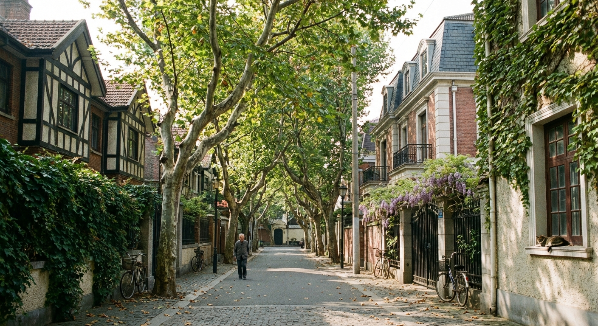

探索我们的所有体验
在这里找到最适合你的上海冒险。我们按主题对体验进行了分类，以便你轻松发现。

弄堂美食家之旅
跟随伙伴穿梭在上海最地道的弄堂里，品尝即将消失的街头美味。

M50艺术区漫步
探索上海的“SOHO”，与画廊主理人交流，发现中国当代艺术的魅力。

法租界微醺之夜
从安静的爵士酒吧到热闹的精酿酒馆，体验上海优雅又先锋的夜生活。

苏州河畔的秘密
骑行探索苏州河沿岸的历史仓库和创意空间，发现城市的另一面。